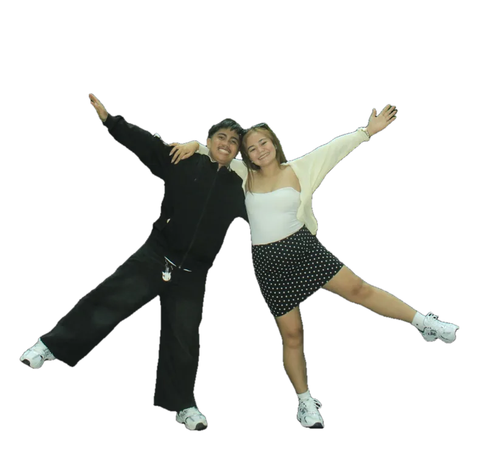
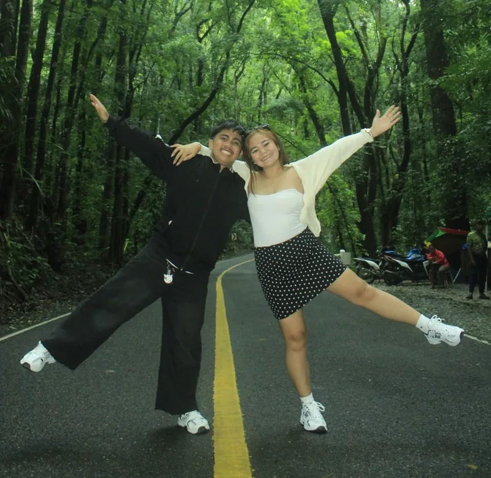

Tap a photo. Pick a frame.
Tap the photo you want to change and a quick menu pops up beside it. Frames apply live on the real picture, and borders can be solid, dashed or dotted in any colour and thickness.
try a few →

Cut your friends out of any photo.
One tap removes the background and keeps the edges clean, even around helmets and hair. Then give the sticker an outline and drop it anywhere on your collage.
pick an outline →Fonts with personality, ready to use.
Start with 23 free fonts sorted by mood: script, serif, display, handwritten, condensed and retro. Every one is licensed for you to share what you make.
Every layer, in plain sight.
Keep scrolling to pull the collage apart. Each photo, sticker and line of text is its own layer, and you can group a few to move them together. Tap one below to hide it, just like in the app.
Everything else you reach for.
Photo grids
Start with 2, 3 or 4 photos in one picture. Swap them, drag the dividers, and blend the edges together.
Crop inside the frame
Drag a photo inside its frame and pinch to zoom. The hidden parts show faintly while you choose.
Masks with fade
Hearts, stars, arches, a straight edge, a spotlight or a shape you draw, each with a soft fade.
Sticker packs
Cute, doodle, scrapbook and travel stickers built in, plus your own cut-outs and PNG imports.
Torn paper & notebook
Frames that look ripped, torn in half or taped onto a lined notebook page.
Export up to 2160 px
Save a sharp PNG for stories, pins and prints, or share it straight from the app.
Try Pin. on your Android phone.
The first version is ready to install. Get the app, make a collage from your last trip, and tell us what you would change.